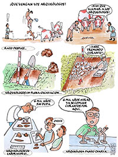

Cómo reconstruimos nuestra historia las arqueólogas y arqueólogos
La arqueología es la disciplina que intenta reconstruir la historia y el modo de vida de los grupos humanos a partir de sus restos materiales. A través del estudio de objetos, estructuras y desechos que las personas usamos y descartamos, podemos ver qué comían, cómo se organizaban y trabajaban, y cómo se relacionaban entre ellos y con la naturaleza.
Cuando se trata de grupos humanos antiguos, muchas veces sus restos materiales van quedando enterrados por el paso del tiempo. Es por eso que los arqueólogos excavamos con mucho cuidado para encontrar esas evidencias, estudiar las características de los materiales, como se distribuyen en el espacio y se asocian entre ellos, para así comprender los modos de vida de nuestros antepasados. Para saber con exactitud a qué período de la historia corresponden los sitios estudiados, uno de los métodos más utilizados es la datación radiométrica, o método del Carbono-14 que permite determinar la antigüedad de restos orgánicos como huesos o carbones.

Descargar (0.99 MB)
{kind=link}